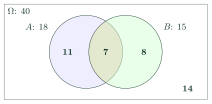

The Addition Rule of ProbabilityCông thức cộng xác suất
Grade 11 · Topic: Probability RulesLớp 11 · Chủ đề: Các quy tắc tính xác suất
1Lesson IntroductionGiới thiệu bài học
Learning goalsMục tiêu bài học
By the end of this lesson you can:
Sau bài học này, em có thể:
state and use the addition rule \(P(A\cup B)=P(A)+P(B)-P(AB)\);
phát biểu và sử dụng công thức cộng xác suất \(P(A\cup B)=P(A)+P(B)-P(AB)\);
use the special case \(P(A\cup B)=P(A)+P(B)\) for mutually exclusive events;
dùng trường hợp riêng \(P(A\cup B)=P(A)+P(B)\) cho hai biến cố xung khắc;
read survey data from a Venn diagram;
đọc số liệu khảo sát từ biểu đồ Venn;
combine the addition rule with complements and independence.
kết hợp công thức cộng với biến cố đối và tính độc lập (bài toán "ít nhất một").
2Mathematical VocabularyTừ vựng Toán học
addition rule – the formula \(P(A\cup B)=P(A)+P(B)-P(AB)\).
công thức cộng xác suất – công thức \(P(A\cup B)=P(A)+P(B)-P(AB)\).
Venn diagram – a picture of sets as overlapping regions inside a rectangle.
biểu đồ Venn – hình vẽ biểu diễn các tập hợp bằng các miền chồng lên nhau trong một hình chữ nhật.
at least one – one or more of the events occur; usually computed via the complement.
ít nhất một – có một hoặc nhiều biến cố xảy ra; thường tính qua biến cố đối.
3Useful English PhrasesCụm từ tiếng Anh thường gặp
Do not count the overlap twice.
Đừng đếm phần chung hai lần.
The two events are mutually exclusive, so we simply add.
Hai biến cố xung khắc nên ta chỉ việc cộng.
Subtract the probability of the intersection.
Trừ đi xác suất của biến cố giao.
Use the complement: one minus the probability of none.
Dùng biến cố đối: một trừ xác suất không có biến cố nào.
Read the numbers from the Venn diagram.
Đọc số liệu từ biểu đồ Venn.
4Prerequisite ReviewÔn tập kiến thức nền
From Bài 28: \(A\cup B\), \(AB\), mutually exclusive (\(AB=\varnothing\)), independent (\(P(AB)=P(A)P(B)\)). Counting: \(n(A\cup B)=n(A)+n(B)-n(AB)\).
Từ Bài 28: \(A\cup B\), \(AB\), xung khắc (\(AB=\varnothing\)), độc lập (\(P(AB)=P(A)P(B)\)). Đếm: \(n(A\cup B)=n(A)+n(B)-n(AB)\).
5TheoryLý thuyết
5.1 The addition ruleCông thức cộng xác suất
Addition ruleCông thức cộng
For any two events: \[P(A\cup B)=P(A)+P(B)-P(AB).\]
Với hai biến cố bất kì: \[P(A\cup B)=P(A)+P(B)-P(AB).\]
If \(A\), \(B\) are mutually exclusive (\(AB=\varnothing\)): \(P(A\cup B)=P(A)+P(B)\).
Nếu \(A\), \(B\) xung khắc (\(AB=\varnothing\)): \(P(A\cup B)=P(A)+P(B)\).
Reason: \(n(A\cup B)=n(A)+n(B)-n(AB)\); divide by \(n(\Omega)\). The outcomes in \(AB\) are counted twice in \(n(A)+n(B)\).
Lí do: \(n(A\cup B)=n(A)+n(B)-n(AB)\); chia hai vế cho \(n(\Omega)\). Các kết quả thuộc \(AB\) bị đếm hai lần trong \(n(A)+n(B)\).

Reading the diagramĐọc biểu đồ
\(P(A\cup B)=\dfrac{18}{40}+\dfrac{15}{40}-\dfrac{7}{40}=\dfrac{26}{40}=0{,}65\). Check: \(11+7+8=26\) students play at least one sport; \(40-26=14\) play none.
\(P(A\cup B)=\dfrac{18}{40}+\dfrac{15}{40}-\dfrac{7}{40}=\dfrac{26}{40}=0{,}65\). Kiểm tra: \(11+7+8=26\) em chơi ít nhất một môn; \(40-26=14\) em không chơi môn nào.
5.2 Using complements and independenceKết hợp biến cố đối và tính độc lập
Useful formsCác dạng thường dùng
\(P(\text{neither})=1-P(A\cup B)\).
\(P(\text{không biến cố nào})=1-P(A\cup B)\).
If \(A\), \(B\) are independent: \(P(A\cup B)=P(A)+P(B)-P(A)P(B)=1-P(\overline A)P(\overline B)\).
Nếu \(A\), \(B\) độc lập: \(P(A\cup B)=P(A)+P(B)-P(A)P(B)=1-P(\overline A)P(\overline B)\).
Exactly one of \(A\), \(B\): \(P(A\cup B)-P(AB)=P(A)+P(B)-2P(AB)\).
Đúng một trong hai: \(P(A\cup B)-P(AB)=P(A)+P(B)-2P(AB)\).
Watch out!Lưu ý
Adding probabilities without subtracting the overlap can give results greater than 1 — a sure sign of an error.
Cộng xác suất mà quên trừ phần chung có thể cho kết quả lớn hơn 1 — dấu hiệu chắc chắn có lỗi.
6Worked ExamplesVí dụ có lời giải
ExampleVí dụ 1BasicCơ bản – Direct useÁp dụng trực tiếp
\(P(A)=0{,}5\), \(P(B)=0{,}4\), \(P(AB)=0{,}2\). Find \(P(A\cup B)\) and \(P(\overline A\,\overline B)\).
Cho \(P(A)=0{,}5\), \(P(B)=0{,}4\), \(P(AB)=0{,}2\). Tính \(P(A\cup B)\) và \(P(\overline A\,\overline B)\).
Analysis: \(\overline A\,\overline B\) is the complement of \(A\cup B\).
Phân tích: \(\overline A\,\overline B\) là biến cố đối của \(A\cup B\).
\(P(A\cup B)=0{,}5+0{,}4-0{,}2=0{,}7\).
\(P(A\cup B)=0{,}5+0{,}4-0{,}2=0{,}7\).
\(P(\overline A\,\overline B)=1-0{,}7=0{,}3\).
\(P(\overline A\,\overline B)=1-0{,}7=0{,}3\).
\(0{,}7\) and \(0{,}3\).
\(0{,}7\) và \(0{,}3\).
ExampleVí dụ 2BasicCơ bản – Mutually exclusive eventsHai biến cố xung khắc
Two dice are rolled. Find the probability that the sum is 7 or 11.
Gieo hai con xúc xắc. Tính xác suất tổng số chấm bằng 7 hoặc bằng 11.
Analysis: The two events cannot happen together.
Phân tích: Hai biến cố không thể cùng xảy ra.
Sum 7: 6 outcomes; sum 11: \((5;6),(6;5)\), 2 outcomes.
Tổng 7: 6 kết quả; tổng 11: \((5;6),(6;5)\), 2 kết quả.
\(P=\dfrac6{36}+\dfrac2{36}=\dfrac8{36}\).
\(P=\dfrac6{36}+\dfrac2{36}=\dfrac8{36}\).
\(\dfrac29\).
\(\dfrac29\).
ExampleVí dụ 3IntermediateTrung bình – SurveyKhảo sát
Of 50 households, 30 have a motorbike, 18 have a car and 10 have both. Pick a household at random. Find P(it has a motorbike or a car) and P(it has neither).
Khảo sát 50 hộ gia đình: 30 hộ có xe máy, 18 hộ có ô tô, 10 hộ có cả hai. Chọn ngẫu nhiên một hộ. Tính xác suất hộ đó có xe máy hoặc ô tô, và xác suất hộ đó không có loại xe nào.
Analysis: Addition rule, then complement.
Phân tích: Công thức cộng, rồi biến cố đối.
\(P=\dfrac{30+18-10}{50}=\dfrac{38}{50}=0{,}76\).
\(P=\dfrac{30+18-10}{50}=\dfrac{38}{50}=0{,}76\).
Neither: \(1-0{,}76=0{,}24\) (12 households).
Không có xe: \(1-0{,}76=0{,}24\) (12 hộ).
\(0{,}76\) and \(0{,}24\).
\(0{,}76\) và \(0{,}24\).
ExampleVí dụ 4IntermediateTrung bình – DivisibilityTính chia hết
A ticket is drawn from tickets numbered 1 to 100. Find the probability that its number is divisible by 4 or by 6.
Rút ngẫu nhiên một vé trong 100 vé đánh số 1 đến 100. Tính xác suất số trên vé chia hết cho 4 hoặc cho 6.
Analysis: Divisible by both 4 and 6 \(\iff\) divisible by 12.
Phân tích: Chia hết cho cả 4 và 6 \(\iff\) chia hết cho 12.
\(n(A)=25\), \(n(B)=16\), \(n(AB)=8\).
\(n(A)=25\), \(n(B)=16\), \(n(AB)=8\).
\(P=\dfrac{25+16-8}{100}=\dfrac{33}{100}\).
\(P=\dfrac{25+16-8}{100}=\dfrac{33}{100}\).
\(0{,}33\).
\(0{,}33\).
ExampleVí dụ 5AdvancedNâng cao – Weather forecastDự báo thời tiết
Tomorrow it rains in Hà Nội with probability 0,6 and in Đà Nẵng with probability 0,3, independently. Find P(it rains in at least one city) and P(it rains in exactly one city).
Ngày mai trời mưa ở Hà Nội với xác suất 0,6 và ở Đà Nẵng với xác suất 0,3, độc lập với nhau. Tính xác suất có mưa ở ít nhất một thành phố, và ở đúng một thành phố.
Analysis: \(P(AB)=0{,}6\cdot0{,}3=0{,}18\).
Phân tích: \(P(AB)=0{,}6\cdot0{,}3=0{,}18\).
At least one: \(0{,}6+0{,}3-0{,}18=0{,}72\) (or \(1-0{,}4\cdot0{,}7\)).
Ít nhất một: \(0{,}6+0{,}3-0{,}18=0{,}72\) (hoặc \(1-0{,}4\cdot0{,}7\)).
Exactly one: \(0{,}72-0{,}18=0{,}54\).
Đúng một: \(0{,}72-0{,}18=0{,}54\).
\(0{,}72\) and \(0{,}54\).
\(0{,}72\) và \(0{,}54\).
7PracticeBài tập luyện tập
A. Multiple ChoiceA. Trắc nghiệm nhiều lựa chọn
\(P(A)=0{,}6\), \(P(B)=0{,}5\), \(P(AB)=0{,}3\). \(P(\overline A\,\overline B)=\)…
Cho \(P(A)=0{,}6\), \(P(B)=0{,}5\), \(P(AB)=0{,}3\). Khi đó \(P(\overline A\,\overline B)=\)…
Answer: a. \(1-P(A\cup B)\).
Đáp án a. \(\overline A\,\overline B\) là biến cố đối của \(A\cup B\): \(1-(0{,}6+0{,}5-0{,}3)\).
Of 40 students, 22 like maths, 18 like English, 8 like both. P(a random student likes exactly one of them) =…
Trong 40 học sinh có 22 em thích Toán, 18 em thích Tiếng Anh, 8 em thích cả hai. Chọn ngẫu nhiên một em. Xác suất em đó thích đúng một trong hai môn là…
Answer: c. Union minus intersection.
Đáp án c. \(\dfrac{22+18-2\cdot8}{40}\).
Independent events: \(P(A)=0{,}5\), \(P(B)=0{,}4\). \(P(A\cup B)=\)…
Hai biến cố độc lập với \(P(A)=0{,}5\), \(P(B)=0{,}4\). Khi đó \(P(A\cup B)=\)…
Answer: c. \(P(A)+P(B)-P(A)P(B)\).
Đáp án c. \(0{,}5+0{,}4-0{,}5\cdot0{,}4\).
B. True or FalseB. Đúng hoặc sai
If \(P(A)=0{,}4\), \(P(B)=0{,}3\) and \(A\), \(B\) are mutually exclusive, then \(P(A\cup B)=0{,}7\).
Nếu \(P(A)=0{,}4\), \(P(B)=0{,}3\) và \(A\), \(B\) xung khắc thì \(P(A\cup B)=0{,}7\).
Check with the addition rule.
Kiểm tra bằng công thức cộng.
Two events with \(P(A)=0{,}7\) and \(P(B)=0{,}6\) can be mutually exclusive.
Có hai biến cố xung khắc với \(P(A)=0{,}7\) và \(P(B)=0{,}6\).
Probabilities never exceed 1.
Xác suất không vượt quá 1; xem lại điều kiện xung khắc.
C. Short AnswerC. Trả lời ngắn
Tickets 1–60. How many tickets are divisible by neither 2 nor 3?
Có 60 vé đánh số từ 1 đến 60. Có bao nhiêu vé có số không chia hết cho 2 và không chia hết cho 3?
Enter a number.
Nhập một số.
\(N-n(A\cup B)\).
\(60-(30+20-10)\).
Two alarms ring independently with probabilities 0{,}9 and 0{,}8. P(at least one rings), in percent, is…
Hai chuông báo động hoạt động độc lập, xác suất reo khi có sự cố lần lượt là 0{,}9 và 0{,}8. Xác suất có ít nhất một chuông reo bằng bao nhiêu phần trăm?
Enter a number.
Nhập một số.
\(1-P(\overline A)P(\overline B)\).
\(1-(1-0{,}9)(1-0{,}8)\).
A. Multiple ChoiceA. Trắc nghiệm nhiều lựa chọn
\(P(A)=0{,}7\), \(P(B)=0{,}4\), \(P(AB)=0{,}2\). \(P(\overline A\,\overline B)=\)…
Cho \(P(A)=0{,}7\), \(P(B)=0{,}4\), \(P(AB)=0{,}2\). Khi đó \(P(\overline A\,\overline B)=\)…
Answer: a. \(1-P(A\cup B)\).
Đáp án a. \(\overline A\,\overline B\) là biến cố đối của \(A\cup B\): \(1-(0{,}7+0{,}4-0{,}2)\).
Of 45 students, 20 like maths, 25 like English, 12 like both. P(a random student likes exactly one of them) =…
Trong 45 học sinh có 20 em thích Toán, 25 em thích Tiếng Anh, 12 em thích cả hai. Chọn ngẫu nhiên một em. Xác suất em đó thích đúng một trong hai môn là…
Answer: d. Union minus intersection.
Đáp án d. \(\dfrac{20+25-2\cdot12}{45}\).
Independent events: \(P(A)=0{,}6\), \(P(B)=0{,}7\). \(P(A\cup B)=\)…
Hai biến cố độc lập với \(P(A)=0{,}6\), \(P(B)=0{,}7\). Khi đó \(P(A\cup B)=\)…
Answer: d. \(P(A)+P(B)-P(A)P(B)\).
Đáp án d. \(0{,}6+0{,}7-0{,}6\cdot0{,}7\).
B. True or FalseB. Đúng hoặc sai
For any events, \(P(A\cup B)\le P(A)+P(B)\).
Với hai biến cố bất kì, \(P(A\cup B)\le P(A)+P(B)\).
Check with the addition rule.
Kiểm tra bằng công thức cộng.
For any events, \(P(A\cup B)=P(A)+P(B)\).
Với hai biến cố bất kì, \(P(A\cup B)=P(A)+P(B)\).
Probabilities never exceed 1.
Xác suất không vượt quá 1; xem lại điều kiện xung khắc.
C. Short AnswerC. Trả lời ngắn
Tickets 1–100. How many tickets are divisible by neither 4 nor 10?
Có 100 vé đánh số từ 1 đến 100. Có bao nhiêu vé có số không chia hết cho 4 và không chia hết cho 10?
Enter a number.
Nhập một số.
\(N-n(A\cup B)\).
\(100-(25+10-5)\).
Two alarms ring independently with probabilities 0{,}7 and 0{,}6. P(at least one rings), in percent, is…
Hai chuông báo động hoạt động độc lập, xác suất reo khi có sự cố lần lượt là 0{,}7 và 0{,}6. Xác suất có ít nhất một chuông reo bằng bao nhiêu phần trăm?
Enter a number.
Nhập một số.
\(1-P(\overline A)P(\overline B)\).
\(1-(1-0{,}7)(1-0{,}6)\).
A. Multiple ChoiceA. Trắc nghiệm nhiều lựa chọn
\(P(A)=0{,}5\), \(P(B)=0{,}6\), \(P(AB)=0{,}4\). \(P(\overline A\,\overline B)=\)…
Cho \(P(A)=0{,}5\), \(P(B)=0{,}6\), \(P(AB)=0{,}4\). Khi đó \(P(\overline A\,\overline B)=\)…
Answer: a. \(1-P(A\cup B)\).
Đáp án a. \(\overline A\,\overline B\) là biến cố đối của \(A\cup B\): \(1-(0{,}5+0{,}6-0{,}4)\).
Of 50 students, 28 like maths, 21 like English, 9 like both. P(a random student likes exactly one of them) =…
Trong 50 học sinh có 28 em thích Toán, 21 em thích Tiếng Anh, 9 em thích cả hai. Chọn ngẫu nhiên một em. Xác suất em đó thích đúng một trong hai môn là…
Answer: a. Union minus intersection.
Đáp án a. \(\dfrac{28+21-2\cdot9}{50}\).
Independent events: \(P(A)=0{,}8\), \(P(B)=0{,}3\). \(P(A\cup B)=\)…
Hai biến cố độc lập với \(P(A)=0{,}8\), \(P(B)=0{,}3\). Khi đó \(P(A\cup B)=\)…
Answer: d. \(P(A)+P(B)-P(A)P(B)\).
Đáp án d. \(0{,}8+0{,}3-0{,}8\cdot0{,}3\).
B. True or FalseB. Đúng hoặc sai
If \(P(A\cup B)=P(A)+P(B)\) and \(P(A),P(B)>0\), then \(A\), \(B\) cannot be independent.
Nếu \(P(A\cup B)=P(A)+P(B)\) và \(P(A),P(B)>0\) thì \(A\), \(B\) không thể độc lập.
Check with the addition rule.
Kiểm tra bằng công thức cộng.
\(P(\text{exactly one})=P(A)+P(B)-P(AB)\).
\(P(\text{đúng một trong hai})=P(A)+P(B)-P(AB)\).
Probabilities never exceed 1.
Xác suất không vượt quá 1; xem lại điều kiện xung khắc.
C. Short AnswerC. Trả lời ngắn
Tickets 1–90. How many tickets are divisible by neither 6 nor 9?
Có 90 vé đánh số từ 1 đến 90. Có bao nhiêu vé có số không chia hết cho 6 và không chia hết cho 9?
Enter a number.
Nhập một số.
\(N-n(A\cup B)\).
\(90-(15+10-5)\).
Two alarms ring independently with probabilities 0{,}5 and 0{,}4. P(at least one rings), in percent, is…
Hai chuông báo động hoạt động độc lập, xác suất reo khi có sự cố lần lượt là 0{,}5 và 0{,}4. Xác suất có ít nhất một chuông reo bằng bao nhiêu phần trăm?
Enter a number.
Nhập một số.
\(1-P(\overline A)P(\overline B)\).
\(1-(1-0{,}5)(1-0{,}4)\).
D. Self-practice: Multiple ChoiceD. Tự luyện: trắc nghiệm
\(P(A)=0{,}4\), \(P(B)=0{,}5\), \(P(AB)=0{,}2\). Then \(P(A\cup B)=\)…
Cho \(P(A)=0{,}4\), \(P(B)=0{,}5\), \(P(AB)=0{,}2\). Khi đó \(P(A\cup B)=\)…
Answer: a. \(P(A\cup B)=P(A)+P(B)-P(AB)\).
Đáp án a. Công thức cộng: \(0{,}4+0{,}5-0{,}2\).
In a class of 50 students, 17 play football, 19 play badminton and 4 play both. A student is chosen at random. P(plays at least one of the two) =…
Một lớp có 50 học sinh, 17 em chơi bóng đá, 19 em chơi cầu lông, 4 em chơi cả hai. Chọn ngẫu nhiên một em. Xác suất em đó chơi ít nhất một trong hai môn là…
Answer: c. \(\dfrac{17+19-4}{50}\).
Đáp án c. \(P(A\cup B)=\dfrac{17}{50}+\dfrac{19}{50}-\dfrac{4}{50}=\dfrac{16}{25}\).
\(A\), \(B\) are mutually exclusive, \(P(A)=0{,}1\), \(P(B)=0{,}4\). Then \(P(A\cup B)=\)…
Hai biến cố \(A\), \(B\) xung khắc, \(P(A)=0{,}1\), \(P(B)=0{,}4\). Khi đó \(P(A\cup B)=\)…
Answer: c. \(P(AB)=0\).
Đáp án c. Xung khắc nên \(P(AB)=0\): \(P(A\cup B)=0{,}1+0{,}4\).
\(P(A)=0{,}75\), \(P(B)=0{,}6\), \(P(A\cup B)=1\). Then \(P(AB)=\)…
Cho \(P(A)=0{,}75\), \(P(B)=0{,}6\), \(P(A\cup B)=1\). Khi đó \(P(AB)=\)…
Answer: b. \(P(AB)=P(A)+P(B)-P(A\cup B)\).
Đáp án b. \(P(AB)=0{,}75+0{,}6-1\).
A number is chosen at random from 1 to 20. P(divisible by 3 or by 4) =…
Chọn ngẫu nhiên một số từ 1 đến 20. Xác suất số đó chia hết cho 3 hoặc cho 4 là…
Answer: b. \(6+5-1=10\) numbers.
Đáp án b. Công thức cộng: \(6+5-1=10\) số (trừ các số chia hết cho cả hai).
In a survey of 40 people, 20 read newspaper X, 12 read Y, 7 read both. P(a random person reads neither) =…
Khảo sát 40 người: 20 người đọc báo X, 12 người đọc báo Y, 7 người đọc cả hai. Chọn ngẫu nhiên một người. Xác suất người đó không đọc báo nào là…
Answer: a. \(1-P(X\cup Y)\).
Đáp án a. \(1-P(X\cup Y)=1-\dfrac{20+12-7}{40}\).
2 dice are rolled. P(at least one shows 4) =…
Gieo 2 con xúc xắc. Xác suất có ít nhất một con xuất hiện mặt 4 chấm là…
Answer: d. Complement: no 4 at all.
Đáp án d. Biến cố đối "không con nào ra mặt 4": \(\left(\dfrac56\right)^2\); lấy 1 trừ đi.
\(P(A)=0{,}75\), \(P(B)=0{,}25\), \(P(AB)=0{,}1\). Then \(P(A\cup B)=\)…
Cho \(P(A)=0{,}75\), \(P(B)=0{,}25\), \(P(AB)=0{,}1\). Khi đó \(P(A\cup B)=\)…
Answer: a. \(P(A\cup B)=P(A)+P(B)-P(AB)\).
Đáp án a. Công thức cộng: \(0{,}75+0{,}25-0{,}1\).
D. Self-practice: Multiple ChoiceD. Tự luyện: trắc nghiệm
\(P(A)=0{,}25\), \(P(B)=0{,}4\), \(P(AB)=0{,}2\). Then \(P(A\cup B)=\)…
Cho \(P(A)=0{,}25\), \(P(B)=0{,}4\), \(P(AB)=0{,}2\). Khi đó \(P(A\cup B)=\)…
Answer: a. \(P(A\cup B)=P(A)+P(B)-P(AB)\).
Đáp án a. Công thức cộng: \(0{,}25+0{,}4-0{,}2\).
In a class of 40 students, 16 play football, 17 play badminton and 10 play both. A student is chosen at random. P(plays at least one of the two) =…
Một lớp có 40 học sinh, 16 em chơi bóng đá, 17 em chơi cầu lông, 10 em chơi cả hai. Chọn ngẫu nhiên một em. Xác suất em đó chơi ít nhất một trong hai môn là…
Answer: d. \(\dfrac{16+17-10}{40}\).
Đáp án d. \(P(A\cup B)=\dfrac{16}{40}+\dfrac{17}{40}-\dfrac{10}{40}=\dfrac{23}{40}\).
\(A\), \(B\) are mutually exclusive, \(P(A)=0{,}2\), \(P(B)=0{,}5\). Then \(P(A\cup B)=\)…
Hai biến cố \(A\), \(B\) xung khắc, \(P(A)=0{,}2\), \(P(B)=0{,}5\). Khi đó \(P(A\cup B)=\)…
Answer: b. \(P(AB)=0\).
Đáp án b. Xung khắc nên \(P(AB)=0\): \(P(A\cup B)=0{,}2+0{,}5\).
\(P(A)=0{,}25\), \(P(B)=0{,}7\), \(P(A\cup B)=0{,}9\). Then \(P(AB)=\)…
Cho \(P(A)=0{,}25\), \(P(B)=0{,}7\), \(P(A\cup B)=0{,}9\). Khi đó \(P(AB)=\)…
Answer: a. \(P(AB)=P(A)+P(B)-P(A\cup B)\).
Đáp án a. \(P(AB)=0{,}25+0{,}7-0{,}9\).
A number is chosen at random from 1 to 20. P(divisible by 2 or by 5) =…
Chọn ngẫu nhiên một số từ 1 đến 20. Xác suất số đó chia hết cho 2 hoặc cho 5 là…
Answer: a. \(10+4-2=12\) numbers.
Đáp án a. Công thức cộng: \(10+4-2=12\) số (trừ các số chia hết cho cả hai).
In a survey of 50 people, 16 read newspaper X, 10 read Y, 4 read both. P(a random person reads neither) =…
Khảo sát 50 người: 16 người đọc báo X, 10 người đọc báo Y, 4 người đọc cả hai. Chọn ngẫu nhiên một người. Xác suất người đó không đọc báo nào là…
Answer: d. \(1-P(X\cup Y)\).
Đáp án d. \(1-P(X\cup Y)=1-\dfrac{16+10-4}{50}\).
3 dice are rolled. P(at least one shows 1) =…
Gieo 3 con xúc xắc. Xác suất có ít nhất một con xuất hiện mặt 1 chấm là…
Answer: c. Complement: no 1 at all.
Đáp án c. Biến cố đối "không con nào ra mặt 1": \(\left(\dfrac56\right)^3\); lấy 1 trừ đi.
\(P(A)=0{,}5\), \(P(B)=0{,}6\), \(P(AB)=0{,}3\). Then \(P(A\cup B)=\)…
Cho \(P(A)=0{,}5\), \(P(B)=0{,}6\), \(P(AB)=0{,}3\). Khi đó \(P(A\cup B)=\)…
Answer: b. \(P(A\cup B)=P(A)+P(B)-P(AB)\).
Đáp án b. Công thức cộng: \(0{,}5+0{,}6-0{,}3\).
D. Self-practice: Multiple ChoiceD. Tự luyện: trắc nghiệm
\(P(A)=0{,}5\), \(P(B)=0{,}6\), \(P(AB)=0{,}2\). Then \(P(A\cup B)=\)…
Cho \(P(A)=0{,}5\), \(P(B)=0{,}6\), \(P(AB)=0{,}2\). Khi đó \(P(A\cup B)=\)…
Answer: d. \(P(A\cup B)=P(A)+P(B)-P(AB)\).
Đáp án d. Công thức cộng: \(0{,}5+0{,}6-0{,}2\).
In a class of 45 students, 13 play football, 17 play badminton and 10 play both. A student is chosen at random. P(plays at least one of the two) =…
Một lớp có 45 học sinh, 13 em chơi bóng đá, 17 em chơi cầu lông, 10 em chơi cả hai. Chọn ngẫu nhiên một em. Xác suất em đó chơi ít nhất một trong hai môn là…
Answer: d. \(\dfrac{13+17-10}{45}\).
Đáp án d. \(P(A\cup B)=\dfrac{13}{45}+\dfrac{17}{45}-\dfrac{10}{45}=\dfrac{4}{9}\).
\(A\), \(B\) are mutually exclusive, \(P(A)=0{,}5\), \(P(B)=0{,}1\). Then \(P(A\cup B)=\)…
Hai biến cố \(A\), \(B\) xung khắc, \(P(A)=0{,}5\), \(P(B)=0{,}1\). Khi đó \(P(A\cup B)=\)…
Answer: c. \(P(AB)=0\).
Đáp án c. Xung khắc nên \(P(AB)=0\): \(P(A\cup B)=0{,}5+0{,}1\).
\(P(A)=0{,}9\), \(P(B)=0{,}5\), \(P(A\cup B)=1\). Then \(P(AB)=\)…
Cho \(P(A)=0{,}9\), \(P(B)=0{,}5\), \(P(A\cup B)=1\). Khi đó \(P(AB)=\)…
Answer: b. \(P(AB)=P(A)+P(B)-P(A\cup B)\).
Đáp án b. \(P(AB)=0{,}9+0{,}5-1\).
A number is chosen at random from 1 to 30. P(divisible by 2 or by 5) =…
Chọn ngẫu nhiên một số từ 1 đến 30. Xác suất số đó chia hết cho 2 hoặc cho 5 là…
Answer: c. \(15+6-3=18\) numbers.
Đáp án c. Công thức cộng: \(15+6-3=18\) số (trừ các số chia hết cho cả hai).
In a survey of 40 people, 19 read newspaper X, 10 read Y, 3 read both. P(a random person reads neither) =…
Khảo sát 40 người: 19 người đọc báo X, 10 người đọc báo Y, 3 người đọc cả hai. Chọn ngẫu nhiên một người. Xác suất người đó không đọc báo nào là…
Answer: a. \(1-P(X\cup Y)\).
Đáp án a. \(1-P(X\cup Y)=1-\dfrac{19+10-3}{40}\).
2 dice are rolled. P(at least one shows 6) =…
Gieo 2 con xúc xắc. Xác suất có ít nhất một con xuất hiện mặt 6 chấm là…
Answer: d. Complement: no 6 at all.
Đáp án d. Biến cố đối "không con nào ra mặt 6": \(\left(\dfrac56\right)^2\); lấy 1 trừ đi.
\(P(A)=0{,}6\), \(P(B)=0{,}75\), \(P(AB)=0{,}4\). Then \(P(A\cup B)=\)…
Cho \(P(A)=0{,}6\), \(P(B)=0{,}75\), \(P(AB)=0{,}4\). Khi đó \(P(A\cup B)=\)…
Answer: b. \(P(A\cup B)=P(A)+P(B)-P(AB)\).
Đáp án b. Công thức cộng: \(0{,}6+0{,}75-0{,}4\).
8Common MistakesLỗi thường gặp
Forgetting to subtract \(P(AB)\). Only mutually exclusive events allow simple addition.
Quên trừ \(P(AB)\). Chỉ khi xung khắc mới được cộng trực tiếp.
Using \(P(AB)=P(A)P(B)\) without independence. Survey data must be read, not multiplied.
Dùng \(P(AB)=P(A)P(B)\) khi chưa biết độc lập. Với số liệu khảo sát phải đọc \(P(AB)\) từ dữ liệu, không được nhân.
Confusing "at least one" with "exactly one".
Nhầm "ít nhất một" với "đúng một".
Accepting a probability greater than 1. Check every answer.
Chấp nhận xác suất lớn hơn 1. Luôn kiểm tra kết quả.
9Lesson SummaryTổng kết
\(P(A\cup B)=P(A)+P(B)-P(AB)\).
\(P(A\cup B)=P(A)+P(B)-P(AB)\).
Mutually exclusive: \(P(A\cup B)=P(A)+P(B)\).
Xung khắc: \(P(A\cup B)=P(A)+P(B)\).
Independent: \(P(A\cup B)=1-P(\overline A)P(\overline B)\); neither: \(1-P(A\cup B)\).
Độc lập: \(P(A\cup B)=1-P(\overline A)P(\overline B)\); không biến cố nào: \(1-P(A\cup B)\).
Key words: addition rule, Venn diagram, at least one, exactly one.
Từ cần nhớ: addition rule, Venn diagram, at least one, exactly one.